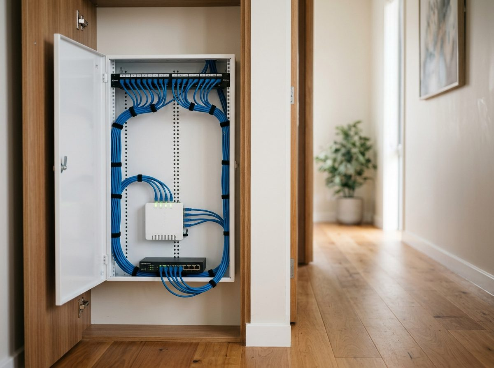

Structured cabling, TV points, NBN and networking across the Jervis Bay area and Nowra, by the same licensed tradesman who does your electrical.

Call Ben on 0431 545 862, weekdays 7am to 3pm and after hours, or leave your details for a call back. A photo of the job helps.
Call 0431 545 862 Request a call back